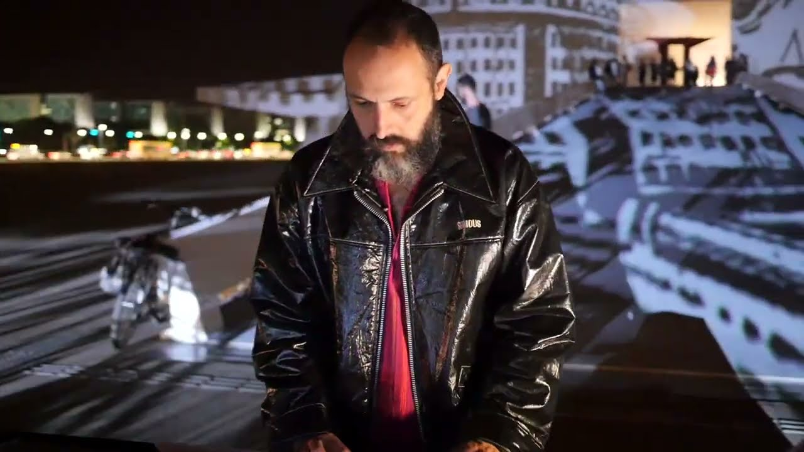
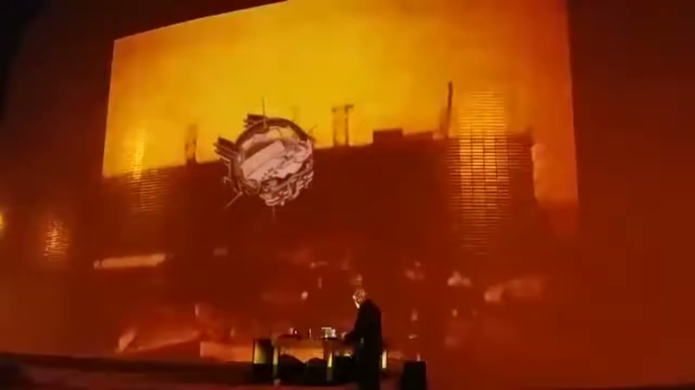

Brasília 1960, 2160
Brasília 1960, 2160
Alexandre RangelRetrofuturismo concretista.
Concrete retrofuturism.

Museu Nacional de Brasília
2017 National Museum of Brasília
2017
2017 National Museum of Brasília
2017

9º Lobo Fest: Festival Internacional de Filmes Curtíssimos
Cine Brasília, 2017
9th Lobo Fest: International Micro-Film Festival
Cine Brasília, 2017
Cine Brasília, 2017
9th Lobo Fest: International Micro-Film Festival
Cine Brasília, 2017